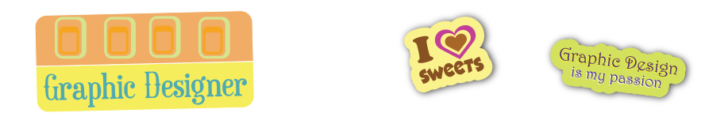
Moodjis is my thesis project which explores how emojis can function as visual tools to promote mental health awareness and support emotional well-being in digital communication. By narrowing the focus to emoji design, this study examines how small, expressive icons can visually represent stress, self-care, emotional support, and healthy coping strategies in chat-based platforms. The project aims to create a custom series of emojis/stickers that support emotional literacy and reduce the stigma around mental health through approachable, culturally relevant symbols. Additionally, I developed a website for users to express their emotions using Moodjis on their own photos. Everything from the website was designed by me including the buttons, layout, and user experience. This project was exhibited at DORCAM. Many users were interacting with the website and brought home their very own decorated photos. I received many praises.


WITHIN PRINTED SPACE is an event for people who love self publishing books, and art. Visitors have a chance to see produced, printed, books, handmade zines, booklets, and more from the maker. I created a campaign for this conceptual Art Book Fair and apply its brand identity throughout assets. WPS branding was inspired by collages. The color palette was based on a magazine I was cutting for another project. The magazine mostly had greens. I created some of the assets such as the posters, exhibitor pass, and wristband. Rather than using a psd mockup, I printed and photographed the materials.

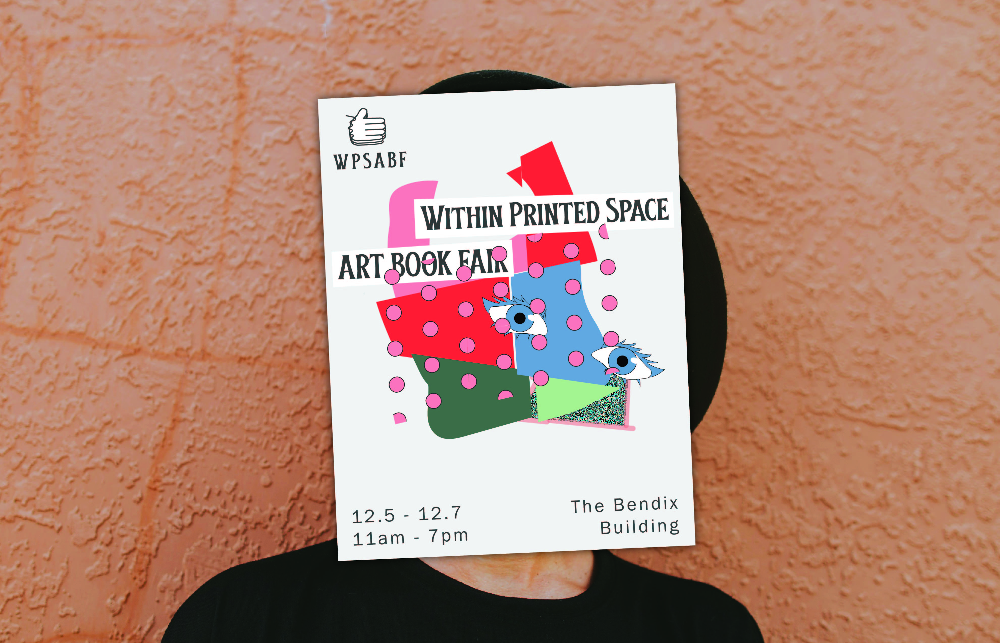
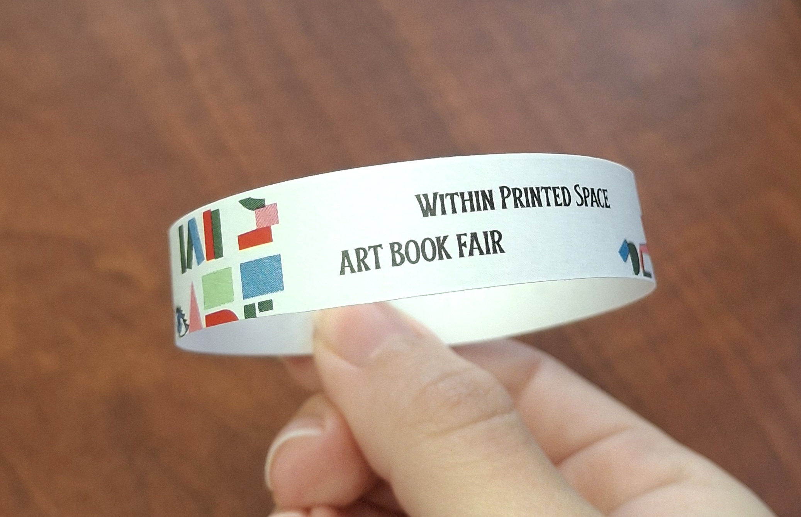
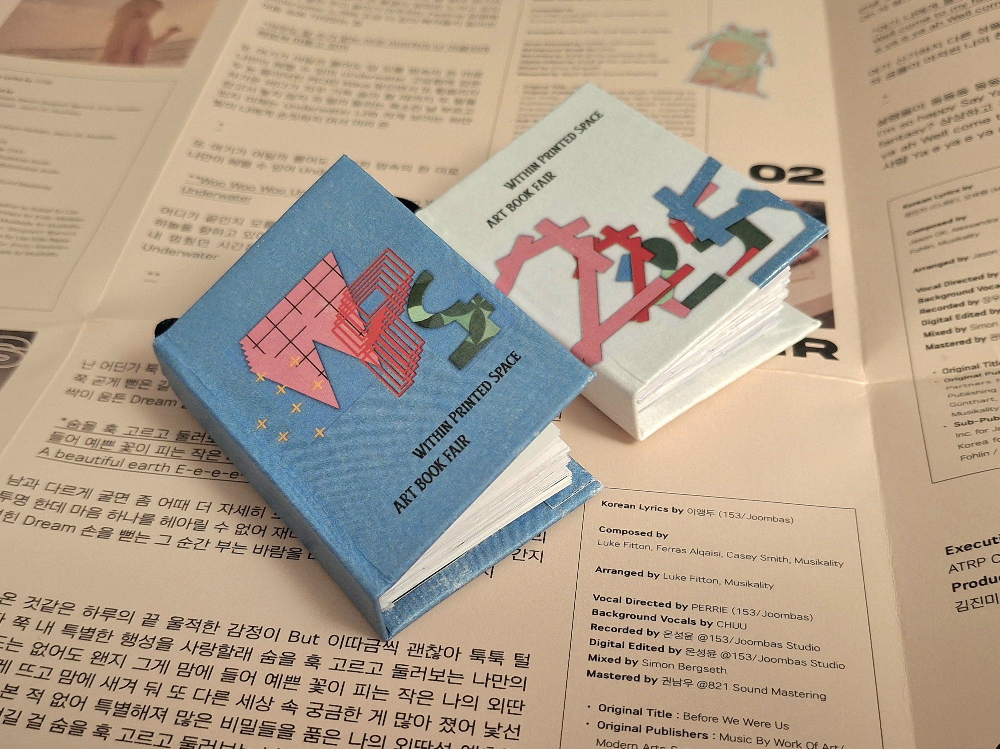
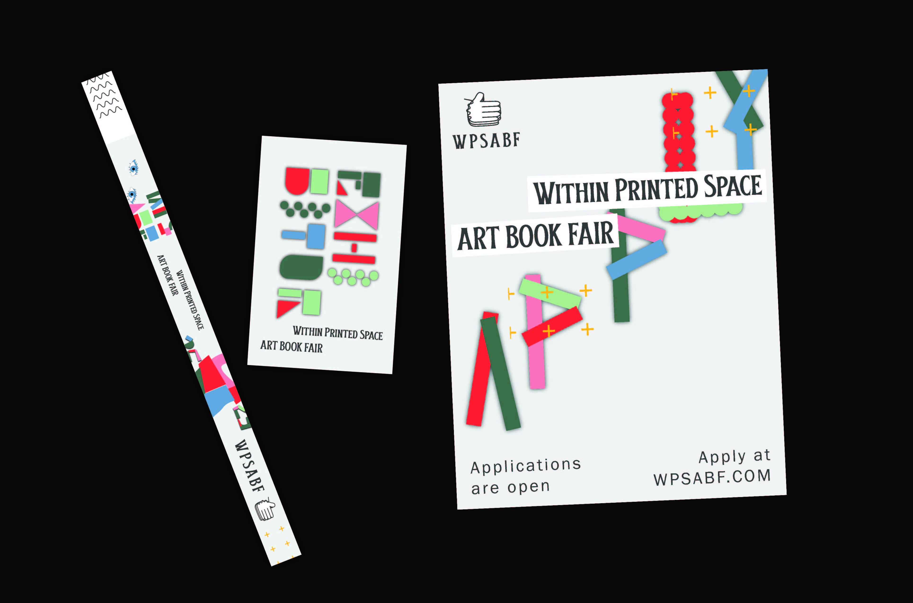
Yes & Yes is a digital flower bouquet site that allows users to create their own floral arrangements. Then, they can share the link to their creation with friends and family. I illustrated the flowers and accessories. I also designed the buttons and the logo.

I designed a mobile invitation for a typography workshop. This project focus on creating animations on Figma. The landing page shows the typography workshop's branding, slowly appearing. Then as users scroll down, there is a top border on constant movement while some text slides in to the screen.
.jpg)
A layout design about sleep guidance and why it's important. The sleep guidance is called "Sleep Smarter". Interact with the page corner to explore the full spread.
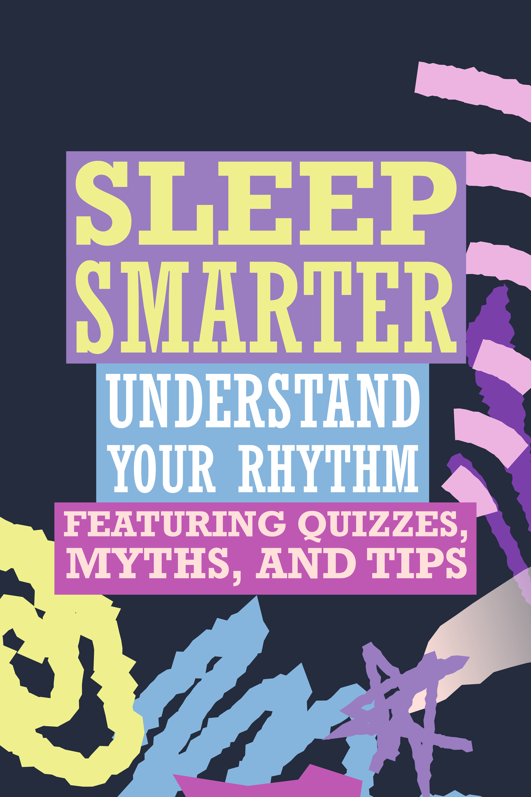


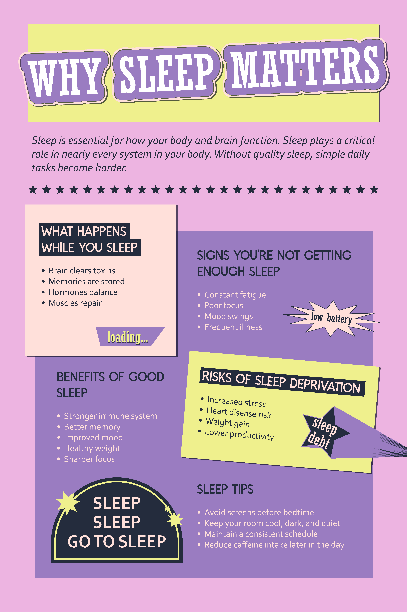
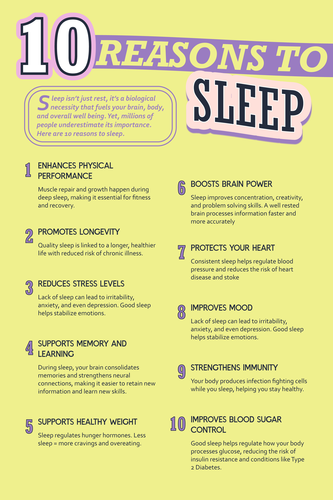
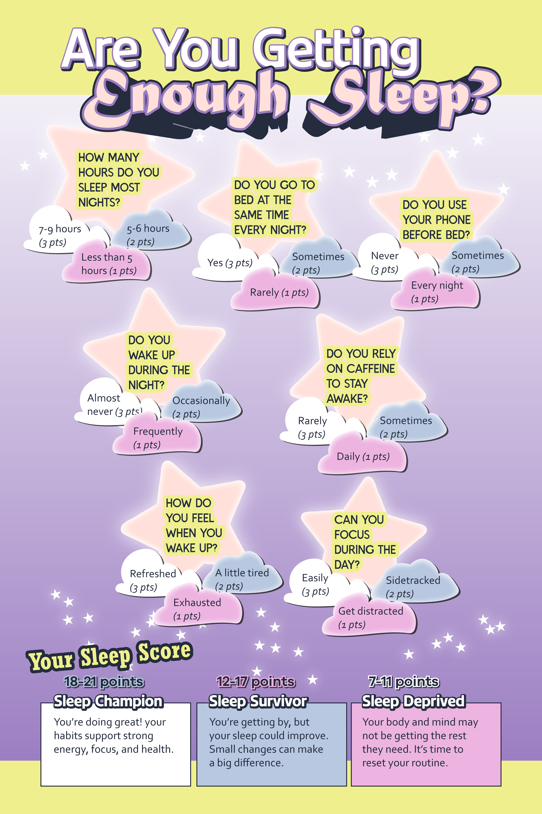
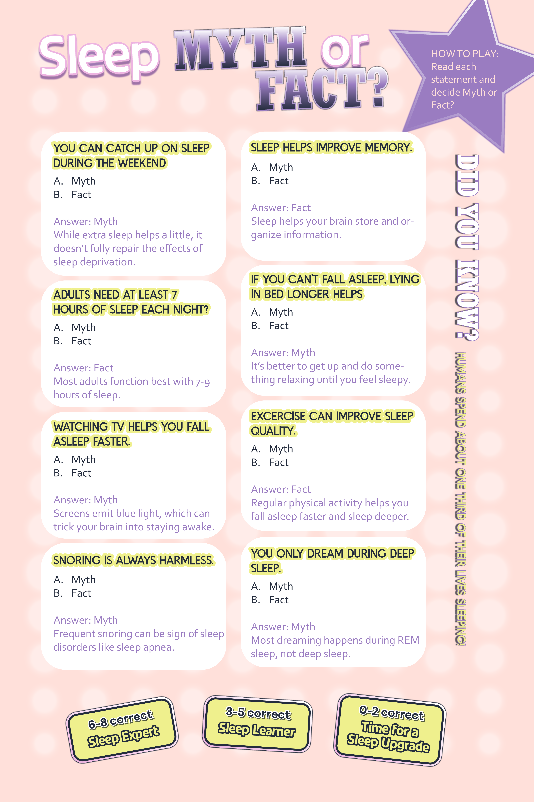
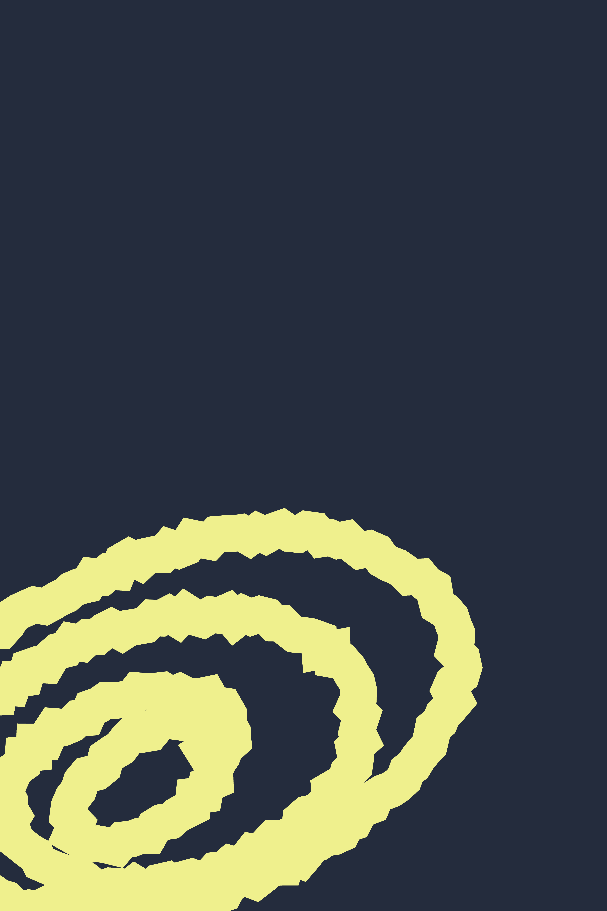